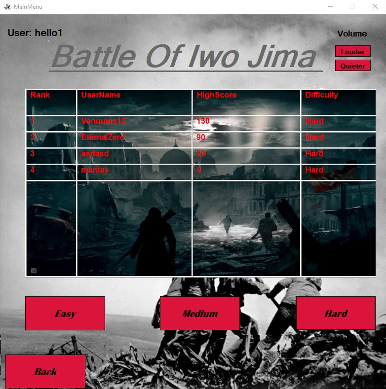
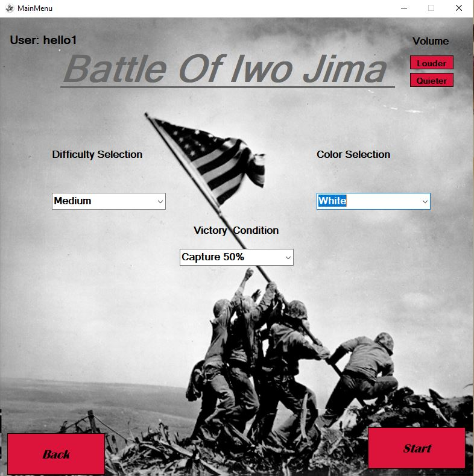
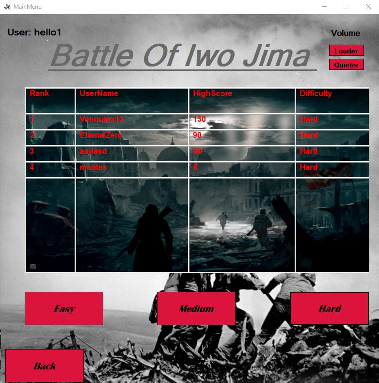
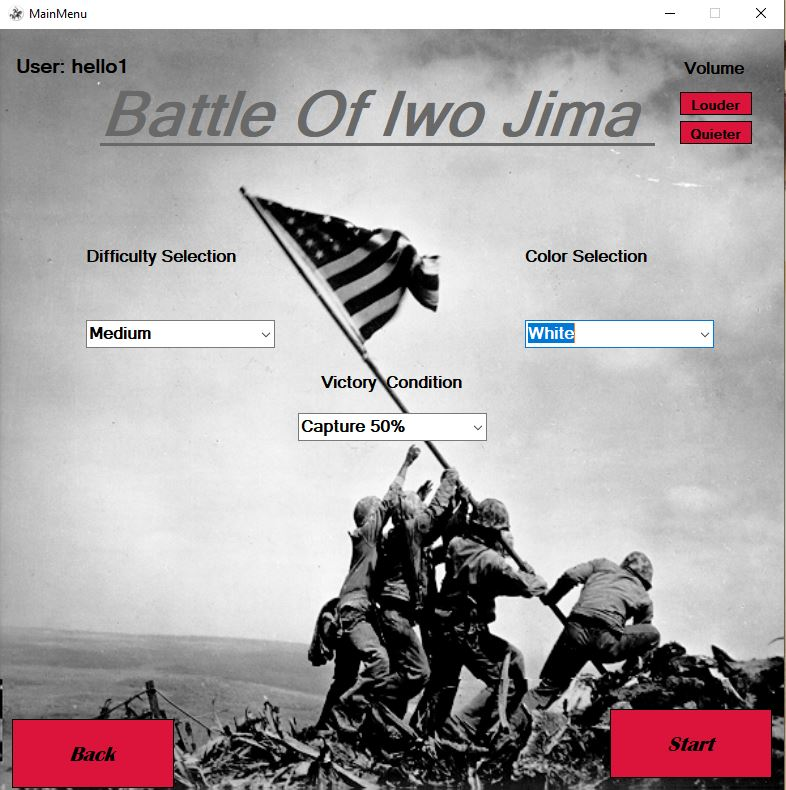
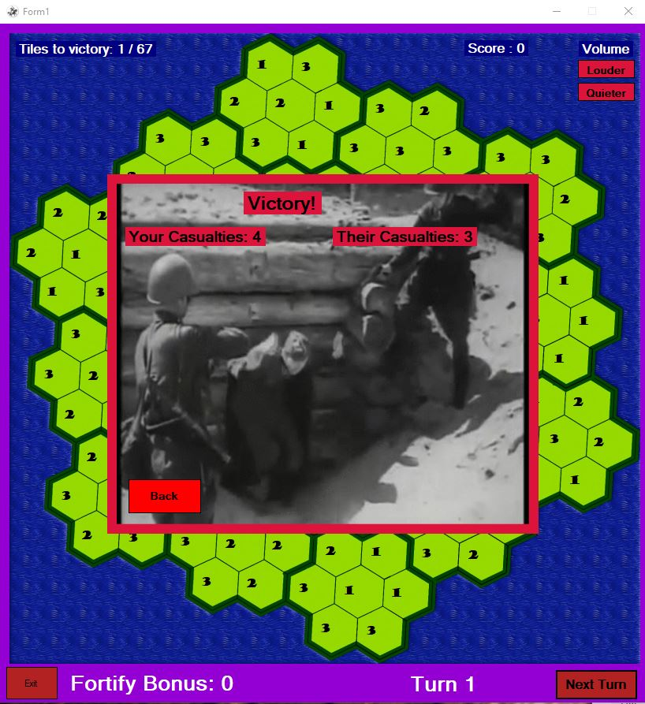
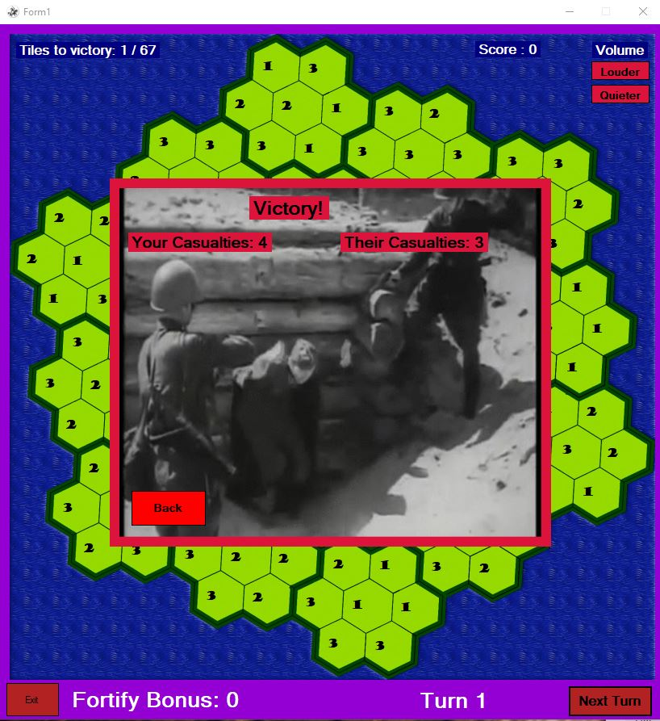

 

Project Description
Objective:
Create an educational game for history students based on world war 2 for the purpose
of making learning accurate, fun and enjoyable.
Requirements:
1: Competitiveness (Leaderboard)
2: Managed difficulty (Game Difficulty)
3: Different levels of authorization (Teacher/Student)
4: Repetativeness (Randomized question order and starting position)
5: List of questions and answers (Randomized)
Technologies:
1: C#
2: Visual studios
3: VB.NET
4: Reading/Writing text files
Summary:
2D turn based strategy game where the player has to conqour land to win. At the end of the turn
the player is asked an educationl history question, and both the player and enemy tiles
increment the number of troops they hold within a random given range.
After ending the turn the programmed enemy will try to attack the player
to regain lost territory if it sees an opening.
The player gains points for answering questions correctly and after the game the score is calculated
and displayed in the leaderboard according to the games selected difficulty.